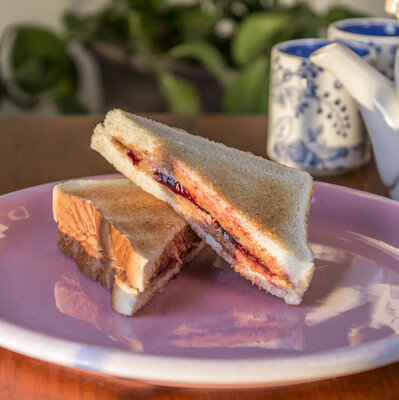

Protein PB & J

Nutrition:
Calories: 930 kcal
Protein: 35 grams
Carbs: 150 grams
Fat: 33 grams
Ingredients:
- 4 slices of whole-grain bread
- 4 tbsp peanut butter
- 2 bananas (or jam)
To make the Protein PB&J, start by toasting the four slices of whole-grain bread if you prefer a crispier texture. Once toasted, spread one tablespoon of peanut butter onto each slice. If you're using bananas, slice them and place them evenly over two of the peanut butter-covered slices. Alternatively, if you’re using jam, spread it onto two of the slices instead. After adding your chosen topping, place the remaining slices of bread on top to form two sandwiches. Press them together gently, slice in half if desired, and enjoy your high-protein, high-calorie meal.